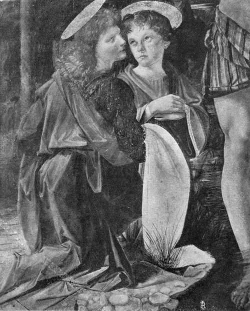

Chapter I. The Records Up To 1493
Description
This section is from the book "Leonardo Da Vinci", by Edward McCurdy. Also available from Amazon: Leonardo Da Vinci.
Chapter I. The Records Up To 1493
IN the taxation return1 made by Antonio da Vinci for the year 1457 his household is stated to consist of his wife, Monna Lucia, aged sixty-four; his son, Ser Piero, aged thirty; another son, Francesco, aged twenty-two; Albiera, the wife of Ser Piero, aged twenty-one; and Lionardo, illegitimate son of the said Ser Piero, aged five, whose mother was Chateria (Caterina), who at the time of the taxation return was the wife of Chartabriga di Piero del Vaccha, of Vinci.
This is the source of the accepted belief that Leonardo was born in 1452. It is confirmed by a taxation return for 14692 in which his age is given as seventeen. The " Anonimo Fiorentino" says his mother was of gentle blood. There are several references in Leonardo's MSS. to Caterina, his housekeeper, and a detailed statement of the costs of her interment, but there is nothing to suggest that this Caterina was his mother.
1 Gaye, " Carteggio," i. 223.
2 Uzielli (1872), Doc. III.
His father, Ser Piero da Vinci, notary to the Signoria of Florence in 1469 and 1483, represented the fifth consecutive generation of his ancestors who had followed the vocation of notary at Florence, Vinci or Anchiano.
In the year of Leonardo's birth he married Albiera di Giovanni Amadori, one of a family of the Florentine nobility. The " Anonimo's " statement as to the status of Leonardo's mother may be a confusion of this fact.
Ser Piero was married four times, and had eleven children by his third and fourth wives, the eldest being born in 1476.
Paolo Giovio says, 1" Leonardusde Vincio ignobili Etruriae vico."
The village of Vinci lies on the western slope of Monte Albano, about six miles from Empoli. Tradition fixes Leonardo's birth at Anchiano, in a low, red-tiled, two-storied house with yellow plastered rubble walls, which stands about a mile and a half above Vinci on a spur of the hills. In a vineyard about twenty yards away from this house are the foundations of the walls of a smaller house, pointed out to me as that in which, according to the Sindaco of Vinci, the birth actually took place. The position of Vinci, which commands the valley of the Arno, was of strategic importance in the wars between Florence and the neighbouring republics. The castle was unsuccessfully besieged by Sir John Hawkwood in 1361, but after this it appears no more in history. At Vinci, at his grandfather's house, Leonardo passed the years of his childhood and youth. Ser Antonio died before 1469, when the family occupied another house at Vinci and part of a house at Florence on the site of what is now the Palazzo Gondi in the Piazza di S. Firenze.
At about this date-M. Ravaisson-Mollien says con-jecturally in 1470-Leonardo entered the bottega of Andrea Verrocchio, where Lorenzo di Credi became his fellow-pupil, and where he became acquainted with Botticelli and Perugino. In the beginning of July, 1472, his name appears in the Red Book of the Debtors and Creditors of the Company of Painters of Florence as being then admitted to membership.1
A pen drawing in the Uffizi of a valley between two ranges of hills, that on the left crowned by a fortified town, is inscribed " the day of S. Mary of the Snow, the 5th day of August, 1473." It is the earliest of Leonardo's dated work. His method of writing is already from right to left. The festival of " S. Mary of the Snow" was a customary one in Italy, where are many churches with this dedication. We may instance that in Siena, built by Francesco di Giorgio. Professor Uzielli says the scene recalls the valley of the Arno under Montelupo, with Monte Albano and the Pisan hills. The resemblance though not exact is considerable; the landscape is, at any rate, Tuscan in character.
He is mentioned in two documents dated 1476,2 and was then still living with Verrocchio.
To the following year M. Ravaisson-Mollien would assign the date of his leaving Verrocchio's bottega and the commencement of his period of service under Lorenzo de' Medici, of which the " Anonimo Fiorentino " speaks.
On the 1st of January, 1478,3 he received a commission for an altarpiece for the chapel of S. Bernard in the Palazzo Vecchio. On the 16th of March he was paid twenty-five florins on account of this work. Only eight days before giving the commission to Leonardo, the Signoria had bestowed it upon Piero del Pollaiuolo. The suddenness of the change in their decision suggests that the influence of Lorenzo de' Medici had been exerted on behalf of his protege. But the work was never executed, and the Signoria, after waiting five years, gave the commission to Domenico Ghirlandaio, and finally to Filippino Lippi, who completed it in 1485.
1 Uzielli (1872), Doc. V.
2 Scognamiglio, Doc. XVI., XVII.
3 "Arch. Stor. Ital.,5-' Series III. vol. xvi
In March, 1480,1 Leonardo was commissioned by the monks of S. Donato at Scopeto,outside the Porta Romana, to paint the altarpiece for the high altar. The time allowed for the work was twenty-four or at most thirty months. In case he failed to complete it within this time the monks reserved power to terminate the contract without compensation. His remuneration was fixed as a third of a small property in the Val d'Elsa, or-at the discretion of the monks-300 florins. He undertook to provide his own colours and gold and all other materials. The records of the monastery mention the advance of various sums on account for colours, and in July, 1481, the sending to him at Florence a load of wood and 1 lira 6 soldi for painting the clock. Whatever progress the work may have made, it was never completed, and in 1496 the monks gave the commission to Filippino Lippi. He painted for them the Adoration of the Magi now in the Uffizi.
There is no direct evidence as to the subject of Leonardo's composition for either of these commissions. The fact of Leonardo's unfinished picture of the Adoration of the Magi in the Uffizi being almost exactly similar in size to Filippino's picture, and that size the very unusual one of an almost exact square, suggests that they were intended for the same altarpiece, and that Filippino, in taking up Leonardo's commission, also took his subject. It is also possible to trace a direct connection between the two pictures. In the figure kneeling before the Virgin, immediately to the right, Filippino has very closely reproduced in reverse profile the features and pose of head of the youngest of the Magi in Leonardo's picture.
1 "Arch. Stor. Ital.," Series III., vol. xvi. The memorandum is dated July, 1481. Its opening words show the date of the commission : " Lionardo di Ser Piero da Vinci si a tolto a dipignere una nostra Pala per l'altare magiore per infino di marzo 1480, . ."
Plate 1. The Angels In The "Baptism Of Christ"
Alinari photo - Accademia, Florence
Continue to:
Tags
leonardo da vinci, pictures, drawings, galleries, statues, da vinci